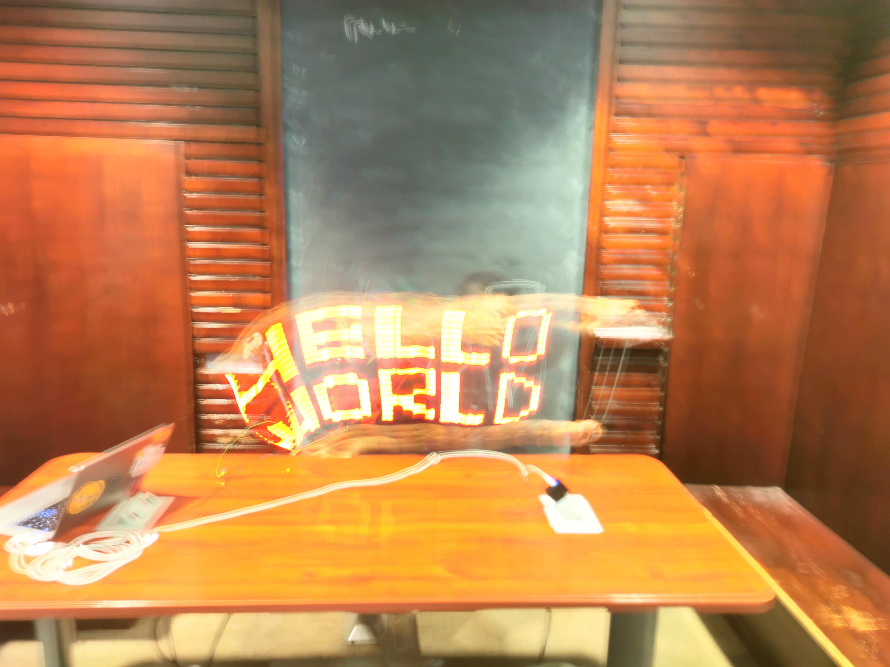
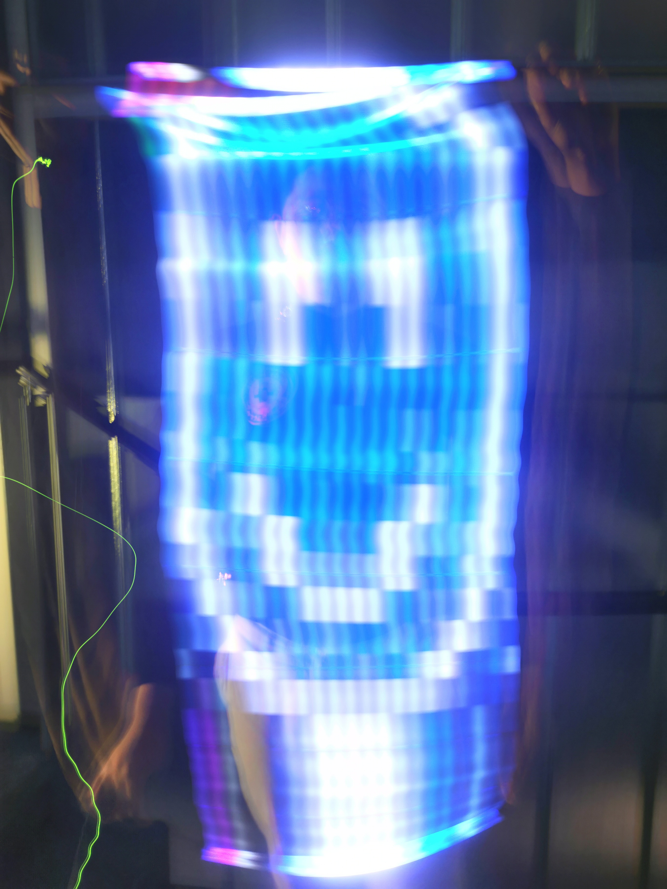
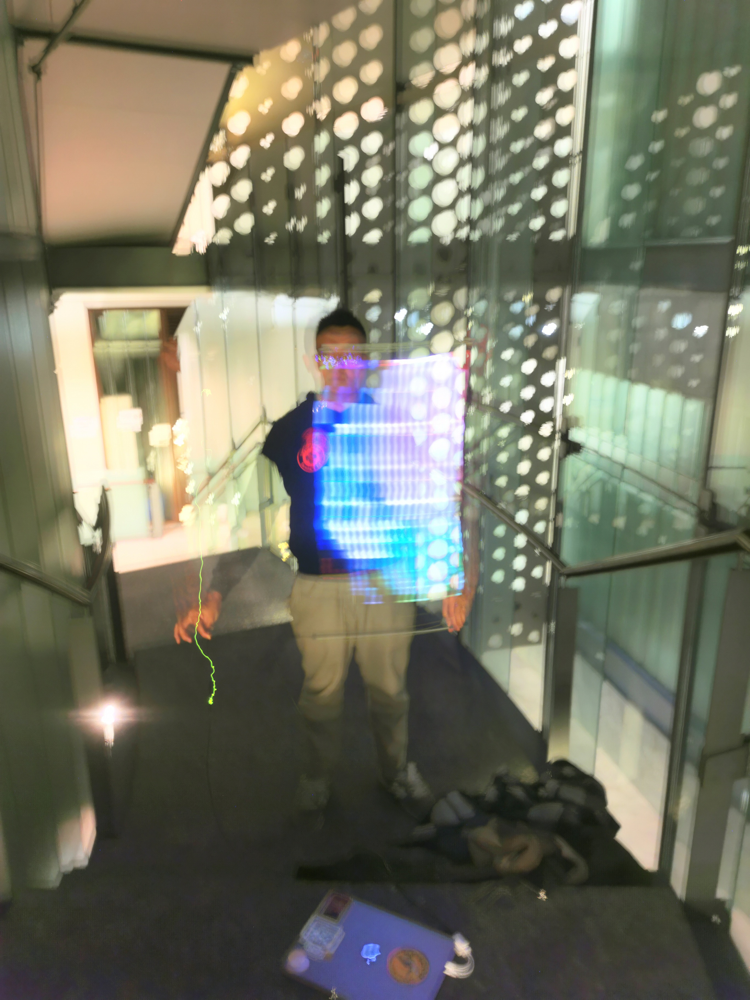

Hi ( ・∇・)/
I am a first year ECE MENG student at UofT.🧑💻
I love creating things in general, drawings, code, whatever, it's all arts. 🖼️
"There is always a difference between complete & presentable"
Engineers, due to the time constraint will often times choose to only complete the necessary functions.
But hey this is my website, I can perfect it everyday till the day I physically cannot.
some cool stuff that i wanna show off... (colaborated w/t another david)


